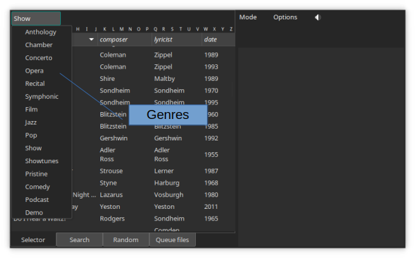
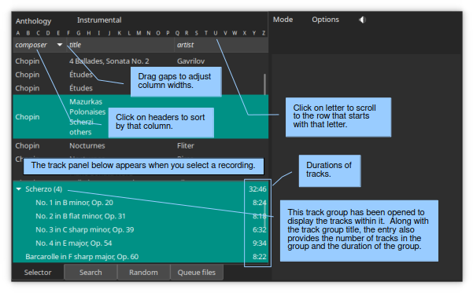
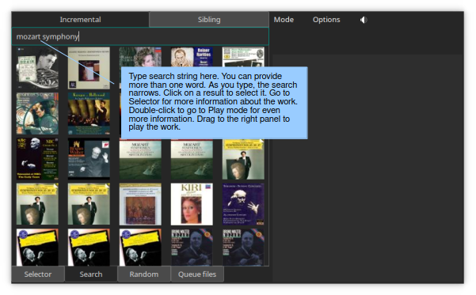
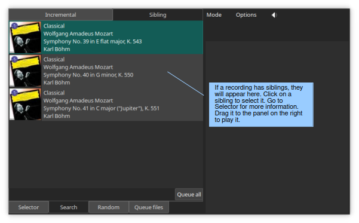
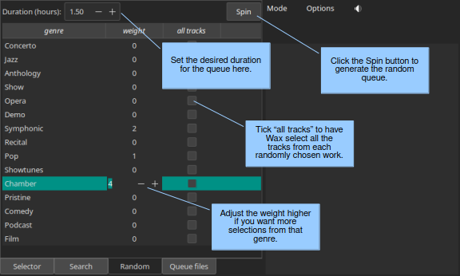
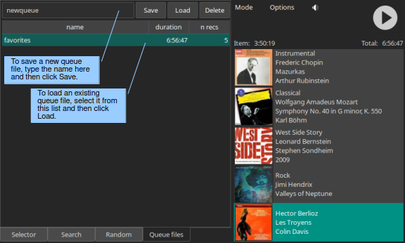
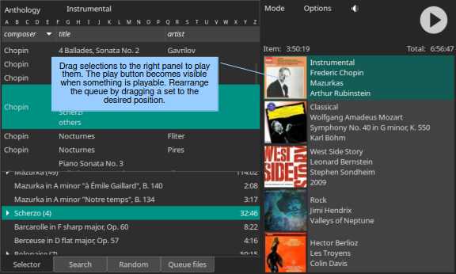

Select Mode¶
Essential reading¶
Selector (three paragraphs)
Introduction¶
Select mode is for selecting works to play. You can select works to play by surveying a list of works in the desired genre, by searching, by random selection, or from a queue file.
Genre selection¶
The genre-selection button (top left in Select mode) displays the identity of the current genre. Pressing the button pops open a menu with a list of all genres defined for your collection. When you select a genre, Wax displays below the genre button a list of the works in the genre.
Left panel (selecting a work)¶
The left panel offers four pages with different methods for selecting recordings. You will use Selector most of the time. It presents a list of works for the selected genre. When you select a work, a panel opens with a list of tracks for the selected work. Search is used for searching for works. Random makes selections randomly based on criteria you control. Queue files selects works that you saved previously in queue files.
Selector¶
When you first select a genre, the panel below the genre button will display a list of all works in that genre. The metadata that appears here are known as the “primary metadata”. You will see that the primary metadata keys (the labels for the columns) and even the number of metadata keys vary with genre. This flexibility allows you to decide the best way to describe the works in each genre. You specify the metadata values for each work in Edit mode when you rip or import a work and you specify the metadata fields in WaxConfig when you design a new genre.
By default, Wax sorts works according to the contents of the first column. To sort by a different column, click on its header. A down arrow in the header denotes the sort column. The alphabet panel allows you to scroll to a work based on the first letter of the value in the sort column.
When you select one of the works, another panel appears with the tracks in the work. You can adjust the position of the divider separating the list of tracks from the list of works. By default, Wax selects all the tracks when you select a work. If you do not want to hear all the tracks on the work, select the ones that you want to hear. You can select a range of tracks by selecting the first one, then the last one while holding down the shift key. Or, you can sweep a range of tracks by holding the mouse button while moving the mouse. You can also select isolated tracks by holding the ctrl key while making additional selections. Note that each track has a number associated with it. The number is the duration of the track.
Tip
To adjust the width of columns in Select mode, drag the vertical line separating two headers.
Tip
If you ever want to return to a display of just the works in the genre (and no tracks), you have three choices: (1) unselect all tracks in the work (using ctrl-click on selected tracks); (2) select the genre again; or (3) drag the divider separating the work and track panels to the bottom (but then you will have to readjust the divider when you want to see tracks).
Tip
After selecting a work, you can see all of its metadata by switching to Play mode. To switch to Play mode, you can use the Mode button in the global control panel, or you can use a shortcut for this common operation: double-click on the work.
Track groups¶
Tracks with an arrow to the left of them are actually track groups. Tracks in a group share some characteristic. For example, the work of Chopin in the figure has four Scherzos. The track group has the title “Scherzo” and the individual tracks are “No. 1”, “No. 2”, and so on. Clicking on the arrow to the left of the group title opens and closes the group. Track groups simplify selection: If you want to play all the Scherzi, select the track group. If you want to play just a few of the tracks, open the track group and select them. The number associated with a track group is the duration of the entire group.
Search¶
There are two types of search, incremental and sibling.
Incremental¶
To search your works for specific text, simply type the text in the entry. Wax will refine its search as you type. If there are too many result, you will see an overflow icon after the search string. You can narrow your search by typing additional words. For example, if the search string “Mozart” produces too many results, you can winnow the list by adding “symphony”. Wax will list works that contain all the words you provide anywhere in its metadata (work or track, primary or secondary). If you click on a search result, Wax will select the work on the Selector page. If Wax found the search string in the work metadata, it will select all the tracks. If it found the text in track metadata, it will select only the tracks containing the matching part of the search string. Note that the search string might be in secondary track metadata in which case you will not see it until you play the track (track metadata) or look at the secondary track metadata in Edit mode. Double-click on an item in the search results to view all of its metadata in Play mode. Drag a search result to the play queue to listen to it.
Tip
Wax normalizes strings when searching, so “name” is the same as “Name” and “dvorak” is the same as “Dvořák”. Wax discards words with fewer than 4 letters and numbers (e.g., years).
Caution
Works match if the words that you specify appear at the start of any string in the metadata for a work. Thus, “moza” matches Mozart. This characteristic is why the search is “incremental”: Continuing to type additional letters narrows the search incrementally.
Also, multiple words in the search string match individually with metadata for the work. Thus, you might type “cole” expecting to get a work match (shows) with music by Cy Coleman and then “sweet” to narrow the search to Sweet Charity, but find that you also got a track match with a recording of various show tunes containing a track of The Sweetest Sounds (by Richard Rodgers) and another of Friendship (by Cole Porter).
Sibling¶
Siblings are works that came from the same CD or the same import. For example, a CD of Mozart symphonies, might have Symphonies 40 and 41 bundled on the same CD. When you rip this CD, you will probably create separate works for the two symphonies. Sibling search will automatically display all works created from a CD when you select a work. To enqueue one or more of the siblings, drag it to the play queue. To enqueue all siblings (in the same sequence they had on the original source), click the “Queue all” button.
Random¶
Random is used for populating the queue with randomly selected items. You can specify the approximate duration of the randomly generated queue at the top of the panel. For each genre, you can specify a “weight”, which is the relative probability that Wax will select a work from the corresponding genre. Wax will select an individual track from each randomly selected work unless you check “all tracks”.
Queue files¶
If you create a play queue that you want to keep for later use, save it in a queue file: Put the desired name in the entry and then click Save. Wax displays a list of saved queue files. To use a saved queue file, select it and then click Load. Delete will delete the selected queue file. For each saved queue file, Wax displays its duration and the number of recordings in the queue file.
It is possible that you deleted a work after including it in a saved queue. If a work is no longer playable, the entry that Wax creates in the play queue will have a red background. If you leave the entry in the play queue, Wax will play a warning sound when it reaches the unplayable item while playing. You can delete an unplayable item from the play queue and then resave the queue file to avoid the warning the next time you access the queue file. Wax displays the work in the queue even though it is unplayable so that you have enough information to fix the problem, if you prefer.
Right panel (play queue)¶
It is possible to queue selections for playback. Once you have selected the work and the tracks that you want to hear, simply drag the selection to the Queue panel on the right. Items in the play queue are called “sets”. If there are already sets in the play queue, drop the new set at the position corresponding to the desired sequence (usually that would be the space below the last set, in which case the new set will be appended to the end of the play queue). You can also rearrange the play queue by dragging sets to the desired sequence. The set at the top of the play queue is the one that will play when you push the play button.
When you queue selections, Wax displays the primary image for the work and a brief description of the work from the primary metadata (the metadata that appear in Select mode). If you want to know the track selections for a set, click on the set. The selections on the left will change to show exactly what the set contains. If you want to see all the metadata for the set, double-click on it; Wax will switch to Play mode (Play mode), which is where you view the complete set of metadata for a work.
When you build a play queue, two numbers appear above the play queue. The one on the left is the duration of the selected set, the other the duration of the entire queue.
Right clicking on a set opens a context menu. The first item in the menu can be used to delete the set (like the “Remove item” choice in the Options menu). The second item sets the random attribute of the set. Setting the random attribute causes Wax to randomize the sequence in which tracks within the set play.
Options¶
In Select mode, the Options menu offers two choices:
Remove item: remove the currently selected item from the play queue.
Clear play queue: remove all items from the play queue.